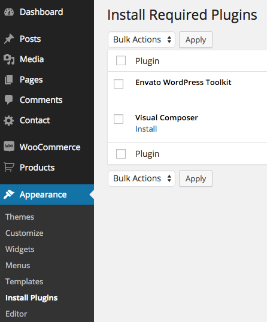
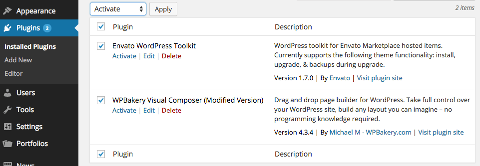
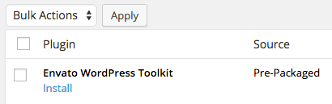
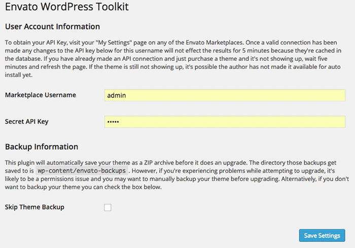
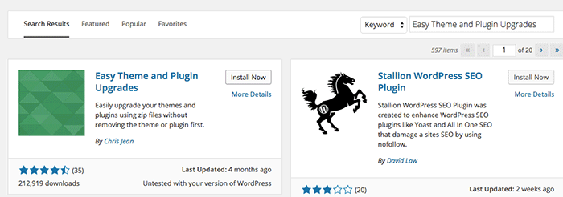
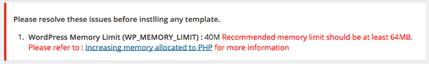
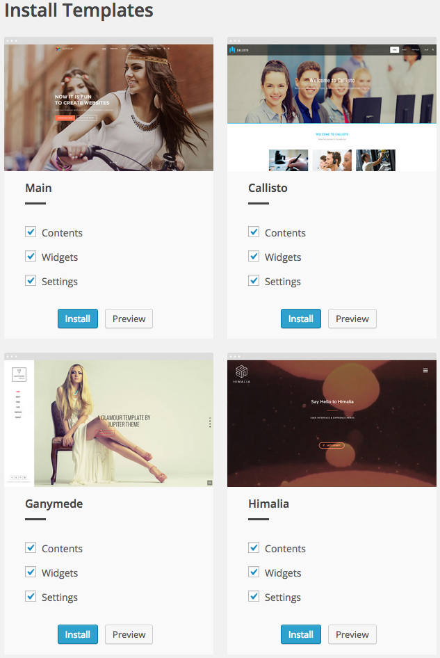
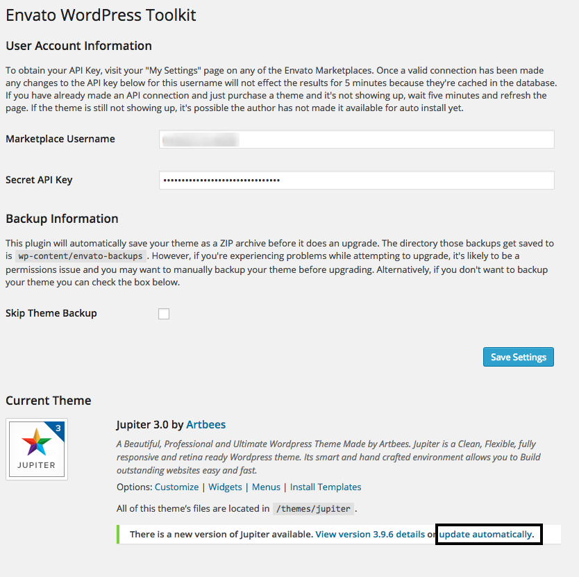
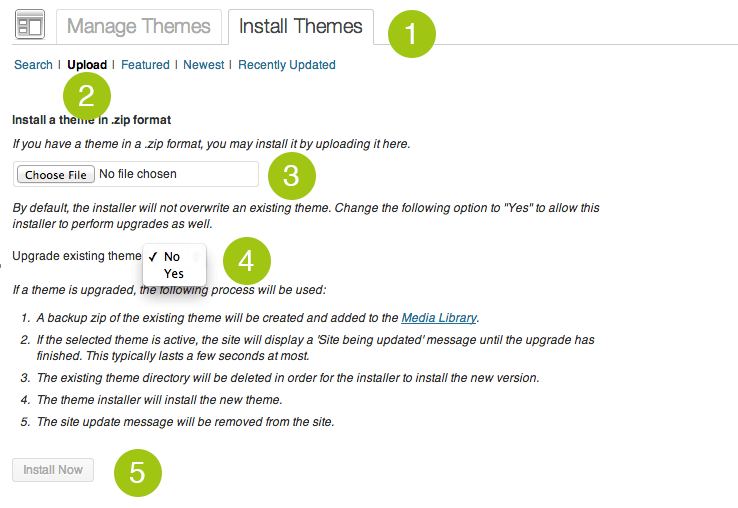

Installing WordPress
WordPress is well-known for its ease of installation. Under most circumstances installing WordPress is a very simple process and takes less than five minutes to complete. Many web hosts now offer tools (e.g. Bluehost, mediatemple) to automatically install WordPress for you. However, if you wish to install WordPress yourself, click below button to read about Famous 5 Minute Installation.
5 Minute Installation Guide
Watch Extensive Video Tutorials
Alternatively you may be interested on below topics:
Disclaimer
Please note that we do not give support or any questions related on how to install and maintain wordpress. For any faulty installation that may cause your website or our theme malfunction you should refer to wordpress support forum. Alternatively you can get help from your web hosting.
Theme Installation
Once you download Jupiter Theme, unzip the main item. you will see the following folders:
- Jupiter.zip
- theme files that you will need to upload them into your wordpress themes directory
- Documentation.zip
- Documentation files
- Plugins.zip
- Required Premium Plugins that you need to install them manually
Jupiter can be installed in two different ways:
- Installing through wordpress
- Uploading through FTP (File transfer protocol)
Installation through Wordpress:
Installing a theme through wordpress is quite a simple process. After you have logged into wordpress account and are ready to go, in the admin panel’s sidebar navigate to appearance and then select themes. After that, click on the install themes tab and select upload from the navigation bar right below it. Click “choose file” button and locate your theme zip file (jupiter.zip) then hit install now. After Jupiter has been installed locate and click activate.
Please be informed that you should not upload the whole item you have downloaded from Themeforest as you will get an error of broken stylesheet file. Instead locate the jupiter.zip file inside the main file you have downloaded.
Warning!
While installing your theme through wordpress admin, you may encounter an error message saying “are sure you want to do this?”. This is mainly due to your hosting php settings. Jupiter theme zip file is roughly around 6mb and in some hostings the default value for max_upload_limit left default which is 2mb. To solve this problem you should either increase your maximum upload size (to 10mb) on your hosting admin panel or ask your host to do it for you if you do not have the privilege to alter your server php settings. This is a very common request and they should be able to help you out. Once the limit is increased you can re-try the install and you’ll be all good to go.
Installation Through FTP
- Download the Theme archive and extract the main theme zip file it contains (jupiter.zip).
- You may need to preserve the directory structure in the archive when extracting these files. Some softwares like "winrar" create a sub directory with the same directory name they have unzipped. uploading theme to your server via FTP with this structure is WRONG and you will face with some errors.
- Use an FTP client (for example filezilla) to access your host web server
- Transfer your unzipped theme to your server in the wp-content/themes
- Once the theme is uploaded, you need to activate it. Go to Appearance > Themes and activate your uploaded theme.
Visual Composer Plugin Installation
With the introduction of Jupiter vision 4.0, You need to install Visual Composer plugin separately. To do that follow the steps below:
- Go to Appearance -> Install Plugins
- Hover your mouse over Visual Composer plug-in, and click install.
- From dashboard menu go to Plugins
- Find Visual Composer Plugin and activate it


Envato Wordpress Toolkit Plugin Installation
With the introduction of Jupiter vision 4.0, You need to install Envato Wordpress Toolkit plugin so that you can easily update your theme and get notifications about it. T do that follow the steps below:

- Go to Appearance -> Install Plugins
- Hover your mouse over Envato Wordpress Toolkit plug-in, and click install.
- From dashboard menu go to Plugins
- Find Envato Wordpress Toolkit Plugin and activate it
- From dashboard menu go to Envato Toolkit menu
- Enter your Envato Marketplace username and Secret API Key
- Click on Save Settings button

After this you will be informed on each theme update and can easily use this feature to update your theme.
(Optional) Easy Theme and Plugin Upgrades Plugin Installation
To ensure that updating theme will go easily and smoothly we suggest that you install Easy Theme and Plugin Upgrades plugin. To do that follow the steps below:
- Go to Plugins -> Add New
- Search for Easy Theme and Plugin Upgrades
- Clicl on Install Now button
- Click on Activate after installation

Importing Demo Content
With the introduction of Jupiter version 4.0 you can easily import demo content with just click of a button. Here is te step by step guide:
- Go to Appearance -> Install Templates
- Check the top section of the page to ensure there is no concern about php and server configuration. If there is then please click appropriate link and follow instructions

- Choose a template that you like.
- Select which portions of template you want to import. (Contents/Widgets/Settings)
- Click on Install button.

Updating Wordpress Theme
There are 2 methods to update our wordpress themes to newer version. These new updates are essential if you want to have a bug free website as we give new features and improvements to the theme over time. Some of these updates might be needed in order to make the theme compatible with wordpress newer versions. There is no risk on losing your settings and pages. However if you had done modifictations on theme files, then they will be lost.
Auto Update using Envato WordPress Toolkit
Using this plugin you can update Jupiter automatically without extra steps. All you need is to follow steps below:
- Go to themeforest.net > Settings > API Keys.
- Generate an API key and store it in a text file as you will need it shortly.
- Now login into your WordPress admin dashboard
- From left sidebar click on Envato Toolkit (If you have not installed it yet read install theme section of this documentation)
- As shown in below screenshot type your username and fill the API key that you just retrieved from themeforest.net
- Save Settings.
- Once the page refreshed you should see the list of themes you have purcahsed.
- If there is a new version available you will get the "update Automatically link (see below screenshot)
- Once clicked, theme will be updated to the most recent version.

Update Through Wordpress Admin Panel
- For this method you should first install Theme Upgrades Tool
- Unzip the file you just downloaded from ThemeForest and locate the WordPress Theme. (eg. Jupiter.zip)
- Log into your WordPress Dashboard.
- Click on “Appearance > Themes”.
- Still within the Themes section, on header tab, click on “Install Themes”, then on header second tab click "Upload".
- Click “Browse…” and locate the new theme file. (eg. Jupiter.zip)
- In the “Upgrade existing theme?” option choose “Yes” from the dropdown list.
- Click “Install Now”.
- Click “Activate”.

Update Using FTP
- Login into your Themeforest account and go to downloads (Dashboad > downloads)
- Download the theme into your computer
- Install an FTP program (Filezilla is free)
- Retrieve your FTP login information from your hosting admin panel and login into your hosting via FTP
- Unzip the item main file
- Locate theme.zip (eg : Jupiter.zip) and unzip it. make sure your unzipping software do not create extra directory with the same name nested into each other.
- drag and drop theme main folder into your FTP program with the destination : "YOUR_HOSTING_ROOT/YOUR_SUBDIRECTORY/wp-content/themes/"
- FTP program will give a warning that there is an existing with the same directory name, choose replace all.
- It will take varying from 15 to 30 minutes to replace all files. once you done login into your wordpress dashboard and go to masterkey settings. on the header (beside masterkey logo) the theme version will be changed to the latest version. this is the indication that your theme is updated. We recommend method one which only takes less than one minute.
Where is the rest of documentation?
We have been doing huge improvements in our online knowledge base and maintaining it in each major release and changes we do in our themes. To get all up to date learning material please visit our knowledge base.
Online Knowledge Base